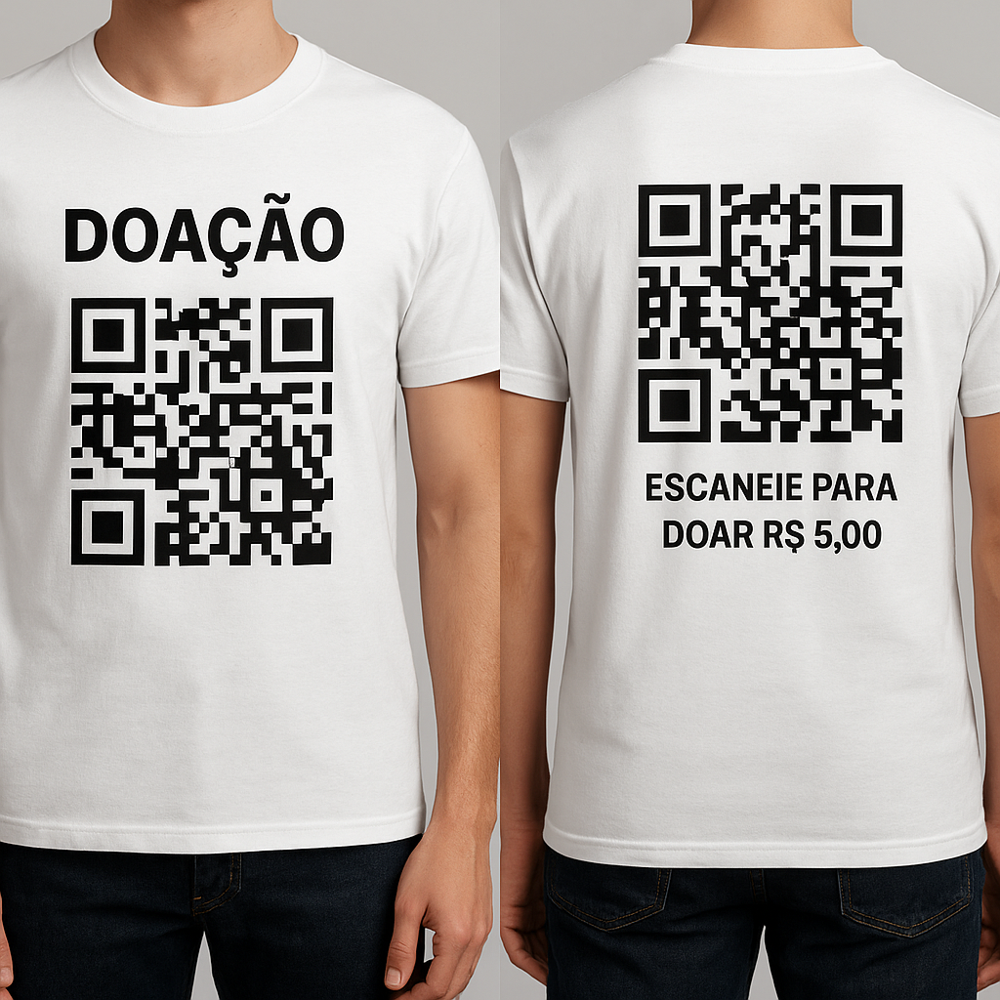
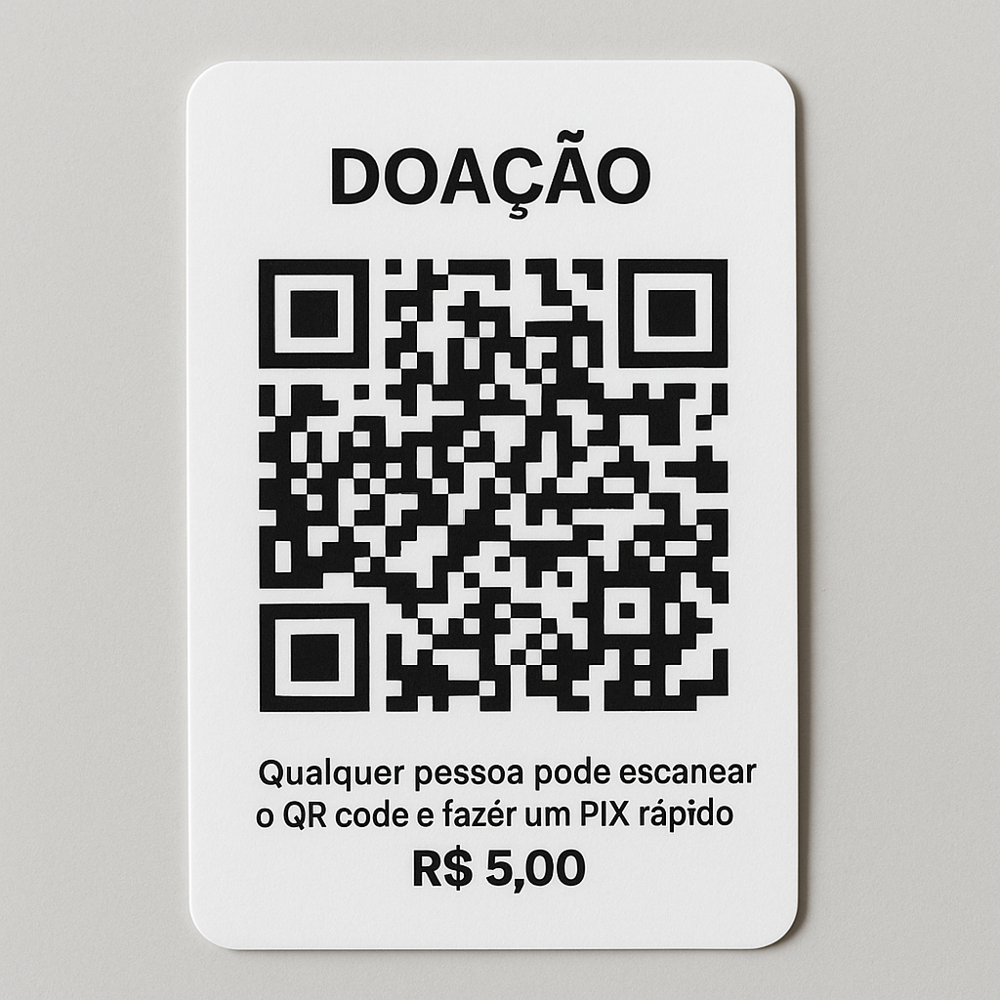
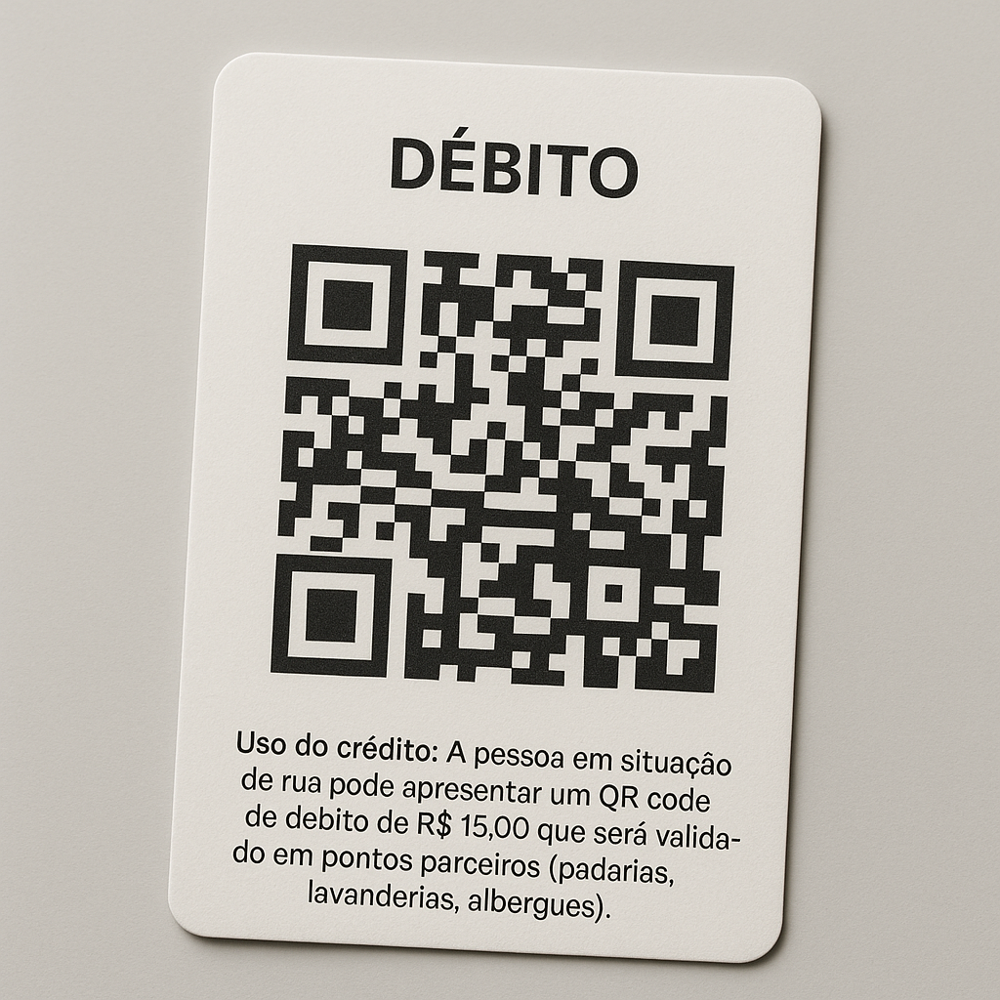

Criar um sistema simples para facilitar doações e gestão de créditos para pessoas em situação de rua, usando QR Codes aplicados em camisetas e cartões de papel.

QR Code estampado com link direto para doação via PIX.

Distribuído junto à camiseta para uso individual.

Usado para solicitar serviços ou produtos em pontos conveniados.
Cada QR pode redirecionar para uma página intermediária que mostra a identificação do beneficiário e o comprovante da transação.